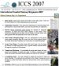
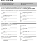

Welcome to the Organisers' Page
International Coastal Cleanup (ICCS) or Year-Round Coastal Cleanup (YRCC)?
The annual International Coastal Cleanup Singapore is conducted on third Saturday of September here and around the world. Organisers recruit volunteers who use the ICC Data Card to collect, categorise and dispose of marine trash. The rest of the year, Organisers are welcome to conduct Year-Round Coastal Cleanups (YRCC) which do not require the use of the ICCS Data Cards.
What it takes
To organise a cleanup efficiently, meaningfully and safely, you need to invest sufficent time to think, plan and implement your programme carefully.
The resources here will support your operational needs and help initiate an educational component.
As the organiser of a group, you can get started by taking these steps:
- It is critical to first read the Organiser's Guidelines (pdf) for a grasp of the operational aspects.
- Register for a cleanup site for your organisation.
- Conduct a preliminary site recce - this is important even at familiar sites; you will be examining it with a different perspective! Review the steps on the event day on paper.
- Register to attend the annual Organiser's Workshop in July - this addresses operations, data and education.
- Arrange for a joint site recce with your Zone or Site Captain.
- You are ready for a clear, educational and motivational briefing and ready to manage your cleanup.
- Debrief your event to improve and upgrade a little each year. It gets easier!
Registration
Registration is only open in the second quarter of the year. As ICCS is a data snapshot around the 3rd Saturday of September, our small island actually has few sites! So we have a limited numer of sites and offer pre-registration to returning participants in recognition of the potential of long-term commitment.
|
|
Guidelines for Organisers
Please read this carefully before the discussion with your Zone Captain.

pdf version - link
web version - link
Presentation powerpoints
Powerpoints contains slides organisers might find useful when briefing participants. It includes some background, guidelines for organisers and a briefing for participants.
The Guide for Organisers participating in the International Coastal Cleanup Singapore - ppts and pdfs, (ver. 2013) click to download the 63mb zip file here which contains: - I - How to organise a cleanup
- Registration
- Objectives
- How does an Organiser prepare?
- What happens on the day of the cleanup?
- II - "Marine Life in Singapore and the Threat of Marine Trash"
- Does Singapore city have marine life?
- A threat to marine life looms on our shores
- About the International Coastal Cleanup Singapore
- How clean are our beaches? (What the data tells us)
- Solutions
Data Card and Submission Sheet
Data Card (ver. 2014)
LINK - 1 card/@3 volunteers
Data Submission Form (ver. 2014)
(MS-Excel) LINK - For submission
|